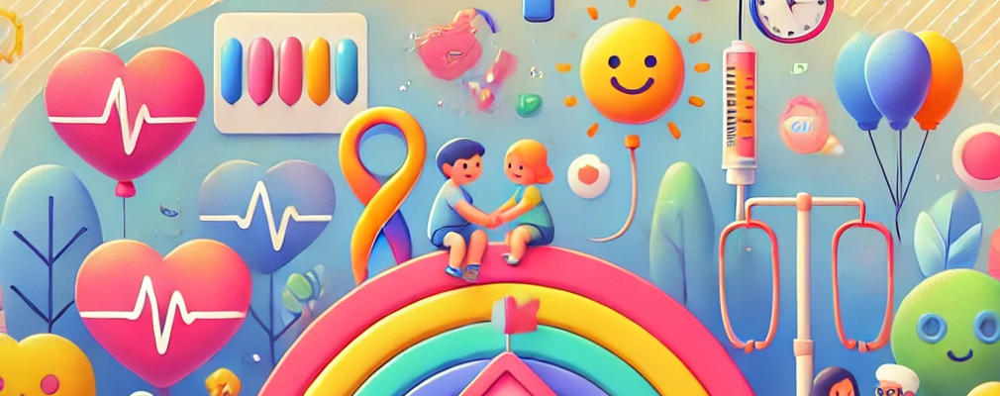

Sobre a CalPed
O CalPed é uma plataforma inovadora desenvolvida para auxiliar pediatras em sua prática diária. Nossa missão é proporcionar ferramentas precisas e seguras que facilitem o trabalho dos profissionais de saúde na área pediátrica.
Nosso objetivo é otimizar o dia a dia dos pediatras com ferramentas tecnológicas que permitem realizar cálculos médicos de maneira rápida e precisa, além de gerenciar prontuários médicos de forma eficiente e segura.
Missão do CalPed
A missão do CalPed é melhorar a qualidade do atendimento pediátrico por meio da inovação tecnológica. Oferecemos ferramentas que ajudam os pediatras a fornecer cuidados de saúde mais precisos e eficientes, garantindo que as crianças recebam o melhor tratamento possível.
Visão do CalPed

Nossa visão é ser a principal plataforma digital de apoio à pediatria, reconhecida pela excelência em tecnologia e segurança de dados. Queremos capacitar os profissionais de saúde com ferramentas que facilitem o diagnóstico, tratamento e acompanhamento dos pacientes pediátricos.
Responsável pelo CalPed

Mauricio Leonardi, médico pediatra em Belém do Pará, Brasil, é o responsável pelo projeto CalPed. Com vasta experiência na área pediátrica, Mauricio dedica-se a melhorar o atendimento e a qualidade dos serviços de saúde para crianças através da inovação tecnológica.
Doação
Se você deseja apoiar o projeto CalPed, pode fazer uma doação através do PIX.